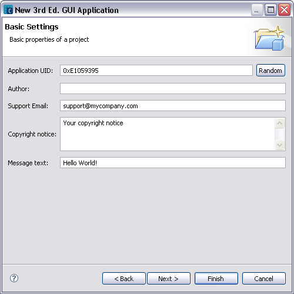

You can set some basic properties for the project in this page, like Application UID, Author and Copyright notice for the project.
NOTE Fields appearing in window vary depending upon the type of project being created.

| Name | Function |
|---|---|
|
Application UID |
Specifies a 32-bit ID to identify the project. |
|
Vendor ID |
Appears for projects that require a 32-bit unique ID to identify the vendor of the executable. In versions of Symbian OS with platform security, a program can read a VID at runtime to check that a binary comes from a particular source. In most cases, the VID should be zero, meaning that source of the executable is not required for any security checks. |
|
Author |
Specifies the name of the Author, who is creating this project. |
|
Copyright Notice |
Specifies the copyright notice to be added to the source code of the project. |
NOTE Tooltips are available for the various fields. Simply hover the pointer over the field title to view the tooltip.